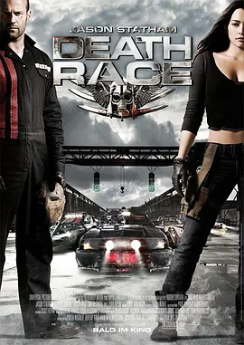

7.6
死亡飞车
Death Race
2008
美国
评分 7.6
导演:
保罗·安德森
演员:
杰森·斯坦森 / 娜塔丽·马丁内斯 / 伊恩·麦柯肖恩 / 泰瑞斯·吉布森 / 琼·艾伦
类型:
动作,惊悚,科幻
剧情简介
在经济崩溃后的近未来，美国监狱系统被私人势力掌控，暴力变成生意，生命被包装成娱乐。铁甲监狱外墙高耸、铁门轰鸣，囚犯们在呼喊与嘘声中等待那场举世瞩目的直播赛事——“死亡飞车”。赛道像战场，硝烟混着机油味，空中盘旋的摄影机如秃鹫般捕捉着每一次撞击。杰森·斯坦森饰演的弗兰克原是优秀赛车手，如今却在妻子被害后蒙冤入狱。他被铐往监舍时，金属锁链轻响，与远处发动机的暴躁轰鸣混在一起，似乎预示着他的命运正被拖向深渊。监狱长轩尼诗冷静而强势，她提出一个交易——让他戴上“科学怪人”的钢面具参赛，只要赢下下一场比赛，他就能获得自由。为了活命，也为了查清真相，弗兰克被迫重返赛场。他与领航员凯丝踏入改装车内，钢板、枪架、火焰喷口层层包裹着他们，仿佛一座移动的牢笼。倒计时归零的那一刻，赛道上的车辆同时怒吼冲出，齿轮摩擦、引擎爆响、火花四射，每一秒都可能成为终点。对手们毫不留情，埋伏、机关、蓄意撞击无处不在。随着比赛推进，弗兰克渐渐察觉这并非单纯的竞技，而是被操控的阴谋。他开始反击，在爆裂的金属碎片与翻滚的火焰间寻找突破口。赛道旁风沙翻涌，监控室内的观众与资本家欢呼，监狱内部则暗潮汹涌。弗兰克必须在极速与死亡之间找到真相，同时为自己争夺哪怕一丝离开的可能。在满是机油味和火光的赛道上，他不只是驾驶员，更是被逼到极限的斗士。此刻，他唯一能依靠的，就是方向盘后的那份坚定。